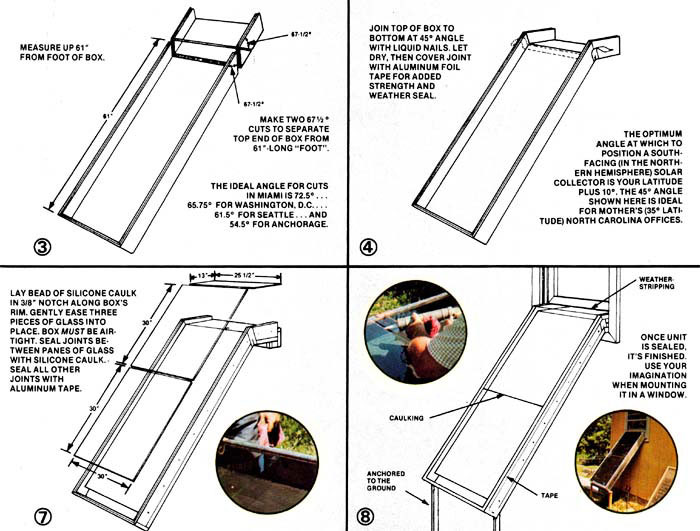

Diy Solar Heating With The Heat Grabber
You can build this super-simple and super-effective solar collector in just one hour!
By the Mother Earth News editors
September/October 1977
Some of the climatologists are predicting that the coming winter could well be colder than the last one. But even if that forecast comes true, you'll be a lot warmer during the clear-but-below-zero sieges ahead than you were during the frigid weather of last January and February, if your house or apartment has one or more unshaded southfacing windows and if you outfit those windows with the Heat Grabber. (See the Image Gallery for Heat Grabber plans or click here for larger plans you can order.)
Believe it or not, this simple and effective "window box" solar collector can be fabricated in just under an hour by an experienced home craftsman (or in less than two hours by the more fumble-fingered among us) for the astonishingly low price of $32.18 (see materials breakdown on next page, prices are from 1977). And once constructed, this sturdy unit should give years of dependable service.
The secret of the Heat Grabber's quick assembly and low cost is a new rigid foam insulation board manufactured by Celotex. This board, trade-named "Thermax TF-610," is impregnated with glass fibers for strength, faced on both sides with heavy aluminum foil, and available in thicknesses ranging from 3/8" to 1-7/8". Celotex actually markets the material as a replacement for the pressed fiber sheathing or "blackboard" now used by contractors in the construction of wood framed houses and does not recommend it for any other purpose. Mother Earth News researchers, however, have run heat and other tests on the insulation board and found it near-ideal for use in quick, easy and low-cost solar collectors such as the Heat Grabber.
Yes, the basic Thermax TF-610 sheet does have a slight disadvantage. Its aluminum foil surfaces can be punctured relatively easily by anyone intent on doing just that. There are, however, at least two remedies for this problem: [1] Substitute Thermax-610/.019 - which is the same foam, but faced on one side with a much heavier layer of aluminum-for the Thermax-610 specified here, or [2] use the Thermax-610 called for in our plans and protect the sides and bottom of the finished collector with a casing of scrap lumber. The second alternative will be less expensive than the first, but, really, neither course of action should be necessary unless you live in a high-vandalism area.
The ideal angle at which to position a southfacing solar collector (in the Northern Hemisphere) or a north-facing collector (in the Southern Hemisphere) is your latitude plus 10°. This adds up to 45° for Mother Earth News' North Carolina offices (which are situated 35° north of the equator) and that's the angle shown on the following plans. Please take this into consideration when making the cuts called for in Steps 3 and 6 in the diagrams in the Image Gallery.
(Miami, for instance, is located about 25° north, which means that collectors there should be angled up at 35° to the horizon, which, in turn, means that the 67.5° cuts specified in the following plans should be 72.5° for Miami. Likewise, the cuts should be 65.75° for Washington, D.C; 61.5° for Seattle; and 54.5° for Anchorage. You can calculate the specific angle for your own location [subtract your latitude plus 10 from 180 and divide by two] or just average it out from the figures given here. The angle is critical, but not that critical.)
Remember that all the dimensions given in the plans are for a collector specifically tailored to fit the windows in one particular house. If your windows are wider or not as wide, feel free to build your Heat Grabber(s) accordingly. And don't get unnecessarily hung up on trying to keep the upper and lower air chambers in the collector exactly as deep as shown here either. A half-inch or more variation is fine. As a matter of fact, it's awfully hard to keep this little Btu-grabber from working, as long as its passages are deep enough for air to circulate through them at all.
One final caution: Although the single-strength glass used to cover the prototype Heat Grabber is no more nor less safe than the single-strength glass currently in use in millions of storm doors and windows throughout the continent. It can break and possibly cut you or a child if, for any reason, either of you falls into it. Take whatever measures you deem necessary so that such an accident never happens.
How the Heat Grabber Works
The Heat Grabber is nothing but a weathertight box that's insulated on the bottom and sides and topped with glass. An insulated divider is positioned inside this box and brought out its top to form an open "lip" at the box's upper end. This lip is designed to hook over a windowsill so that the window itself can be pulled down snugly onto the glass which covers the top of the Heat Grabber, leaving the main body of the solar collector "leaning against" the south side of the house at a 45°-or-better angle. (See illustration in the Image Gallery - How it Works.)
The operation of the unit is just as simple. When the sun shines, its rays pass through the glass on top of the Heat Grabber, strike the upper surface of the divider (which is painted black), and warm the aluminum foil covering on that divider. As the foil heats up it, in turn, warms the air next to it. And that air, as might be expected, rises up the face of the divider and begins to pour out the opening at the Heat Grabber's top.
But, of course, that hot air can't move up the face of the divider unless it pulls cool air around the divider's foot to take its place. Which pulls even more cool air in through the lower opening at the collector's top (the only place that cool air can enter the otherwise airtight unit) and down under the central divider.
What we have, then, is a "convective loop" solar room heater that operates automatically on nothing but the sun's energy. Whenever the sun shines, this clever little unit (which, as near as we can tell, seems to be an old Steve Baer design modified by William A. Shurcliff and further refined by some of Mother Earth News' research staff) just sits there happily pumping thousands of Btu's of heat into the house. And when the sun quits shining? The air in the box cools and tries to sink to the collector's foot, which "shuts off" the whole convective loop. (The Heat Grabber, in other words, will spew heat into the room when the sun shines, but it won't pull heat from the room when the sun doesn't shine.)
Heat Grabber Materials
| Quantity | Material | Our Unit Cost | Cost of Materials Used |
| 1 sheet | 1" x 4' x 8' Celeotex Thermax TF-610 | $10.75 | $10.75 |
| 1/2 sheet + | 3/4" x 4' x 8' Celotex Thermax TF-610 | 8.85 | 4.60 |
| 1 tube | Liquid Nails panel adhesive | 1.00 | 1.00 |
| 1/2 tube | silicone caulking compound | 3.50 | 1.75 |
| 16 | No. 8 finishing nails (scrounged) | 0.00 | 0.00 |
| 3 pieces | single strength glass cut t fit | (all inclusive order) | 10.49 |
| 1/4 roll | all-metal aluminum foil duct tape | 4.00 | 1.00 |
| 1 quart | Rustoleum flat black paint | 2.59 | 2.59 |
Total cost of materials used in construction of window collector: $32.18
Collector's size: 12.6 square feet
Cost per square foot: $2.56
Note: All materials were purchased at retail from local outlets in Hendersonville, NC (1977). Expect minor differences in the prices quoted above in your area, due to variances in freight charges, dealer policies, etc. Thermax TF-610, for instance, is manufactured in Tampa, Fl., and the further you live from Florida, the more your dealer will probably pay for his shipment of the panels. Celotex is opening up several new Thermaz manufacturing plants across the country, however, and this particular pricing difference should soon disappear.
Tools to Build the Heat Grabber
Thermax is so easy to work with that you won't need any saws, hammers or other "conventional" carpentry tools to build this solar collector. The Heat Grabber, in fact, was constructed with little more than a protractor, tape measure, paint brush and two little "we built 'em ourselves" knives. (See illustration in the Image Gallery - Tools.)
These knives are nothing but blocks of 1 " x 2-1/2" hardwood cut to fit the hand comfortably. The pieces of wood were then slotted and rigged with 10-32 bolts and wing nuts to grip Stanley 1992-5 utility knife blades at either a 45° (for "V" cuts) or a 90° (square cuts) angle to the blocks' faces.
All cuts on the Thermax used in the collector were made straight and accurate by sliding one or the other of the two knives along a board or other straightedge that had been clamped to the rigid sheets of foam. For "V" cuts, the blade in the 45° knife was set to slice only to within about 1/32" of the aluminum facing on the "far" side of the sheet (not all the way through either the facing or the foam). Since the foam varies slightly in thickness, this setting (for the most part) kept the blade from cutting too deeply. Two such cuts (with the straightedge reset between them), of course, were necessary for the completion of each "V".
And if you don't want to make "V" cuts and fold up the box of your solar collector? Then just build your "heat grabber" from separate pieces of Thermax, all made with right angle cuts; peel back the aluminum skin from the butted face of each joint; and glue the sections - foam to foam - together.
|
J. WEILAND Once built, the Mother Earth News heat grabber should give years of dependable service. |
 MOTHER EARTH NEWS/J. WEILAND To view the illustration in focus, click on the image. This illustration that includes four panels, 1, 2 ,5 & 6, should be printed and paired with the next image that includes panels 3,4,7 & 8. |
 MOTHER EARTH NEWS/J. WEILAND To view the illustration in focus, click on the image. This illustration that includes four panels, 3, 4, 7, and 8, should be printed and paired with the next image that includes panels 1, 2, 5, and 6. |
|
MOTHER EARTH NEWS How it Works: The Mother Earth News heat grabber is nothing but a weathertight box that's insulated on the bottom and sides and topped with glass. |
J. WEILAND Tools: The Mother Earth News heat grabber was constructed with little more than a protractor, tape measure, paint brush and the two little knives you see here. |
|